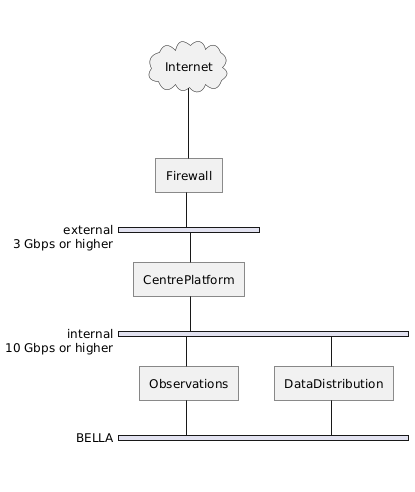

Network Security
Cortafuegos en capa de red y de aplicación, IDS/IPS y auditorías periódicas; diagrama de la arquitectura de red con el filtrado del tráfico de Internet y las conexiones internas protegidas.
To safeguard the Platform's network infrastructure against cyber threats, a comprehensive security approach is implemented. This approach includes the use of firewalls at both network and application layers, as well as intrusion detection and prevention systems (IDS/IPS). These systems control and monitor incoming and outgoing network traffic based on predetermined security rules, providing protection against unauthorised access and potential cyber threats.
Regular network audits and security assessments are conducted to identify and mitigate vulnerabilities, ensuring that the network remains resilient against evolving threats. The infrastructure provider is responsible for maintaining firewalls, VPNs, and conducting these security assessments. Meanwhile, the Platform operations team is tasked with configuring security settings to meet specific needs, monitoring network security, and implementing additional security measures as necessary.

The network architecture, as depicted above, illustrates the key components of the network security setup. Traffic from the Internet is first filtered through a firewall before reaching the
CentrePlatform. Internal communications between the CentrePlatform, Observations, and DataDistribution components are carried out over high-speed internal connections, further secured by the infrastructure provider.
- External Connection: 3 Gbps or higher external connection, secured by the firewall, ensures that traffic from the Internet is controlled and monitored before it reaches the internal systems.
- Internal Network: The internal network operates at 10 Gbps or higher, facilitating fast and secure communication between the CentrePlatform, Observations, and DataDistribution components, all of which are protected by the BELLA (Building Europe Link to Latin America) network infrastructure.
This layered security approach, supported by regular assessments and updates, ensures that the platform's network remains secure, efficient, and capable of supporting its operations.